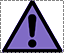
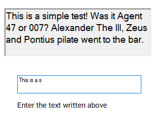
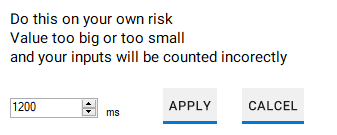

- What is calibration
- Why do I need to calibrate application
- How can I calibrate application
- Automatic calibration(reccomended)
- Calibration test
- Manual calibration
What is calibration
In simple terms it is just a time for how long system is going to measure time between button presses.
Why do I need to calibrate application
Calibration is there so application could adapt to your typing style. For example: if your calibration level is too low all of you button presses might be considered as 1st button press.
If it's too high application might count time between button presses even when you took a second to think about what to type next.
Which would lead application to provide incorect analysis and statistics.
How can I calibrate application
There are three ways of doing it:
Automatic calibration(reccomended)
This option will be provided to you the very first time you launch a application.
If you choose this option application will be calibrated automaticly during your normal use with a keyboard. When application is going to collect enough data it is going to assign you user level automatcily.
When automatic calibration is in use you'll see this logo:

Which states that automatic calibration is on. And while it is on displayed statistics might be incorect. It will be fixed once automatic calibration ends.
Calibration test
If you want you can do calibration test to set user level.
Application will provide you with a text to type, you should type it in the required box. Once you finish typing it application calculates how you did and will set user level

Manual calibration
This one is reccomended only for advanced users.
In the provided box enter user level value you desire and press apply. Minimum value is 200ms while maximum one is 10 000ms
